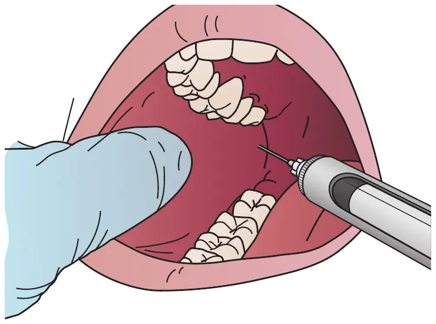
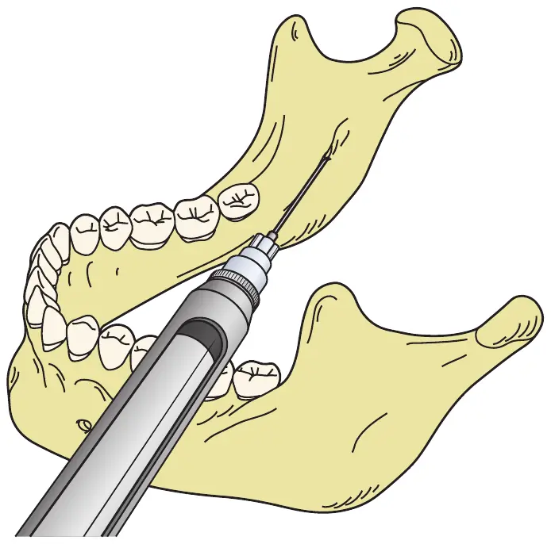

نسخه استخراجشده؛ ترجمه یا تأیید علمی انجام نشده است. وضعیت: captured
سوزن بلند ۲۵ گیج توصیه میشود؛ ۲۷ بلند هم قابلقبول است. محل ورود: مخاط سطح داخلی (لینگوال) راموس مندیبل، در محل تقاطع یک خط افقی و یک خط عمودی. ناحیهی هدف: عصب آلوئولار تحتانی، وقتی به سمت پایین بهطرف سوراخ مندیبولار میرود — ولی پیش از آنکه وارد سوراخ شود.

سه لندمارک: شیار کورونوئید (بیشترین تقعر لبهی قدامی راموس)، بخش عمودی رافهی پتریگومندیبولار، و صفحهی اکلوزال دندانهای خلفی پایین.
پارامتر اول — ارتفاع تزریق: انگشت اشاره یا شست را در شیار کورونوئید بگذار. یک خط فرضی از نوک انگشت به سمت عقب تا عمیقترین بخش رافهی پتریگومندیبولار کشیده میشود. این خط باید موازی صفحهی اکلوزال مولرهای پایین باشد، و در بیشتر بیماران ۶ تا ۱۰ میلیمتر بالای صفحهی اکلوزال قرار میگیرد.
پارامتر دوم — موقعیت قدامی-خلفی: نقطهی ورود سوزن در سهچهارم فاصله از شیار کورونوئید به عقب تا عمیقترین بخش رافه قرار دارد. بدنهی سرنگ در گوشهی دهان سمت مقابل، معمولاً روی پرمولرها قرار میگیرد.
و یک نکتهی آناتومیک که اغلب اشتباه فهمیده میشود: رافهی پتریگومندیبولار از رترومولار پد بهصورت افقی به عقب میرود و بعد به سمت کام بالا میپیچد. تنها بخش عمودی رافه است که بهعنوان نشانهی لبهی خلفی راموس به کار میرود.
پارامتر سوم — عمق نفوذ: باید استخوان لمس شود. سوزن را آهسته جلو ببر تا تماس با استخوان را حس کنی.

عمق میانگین تا تماس استخوانی در بزرگسال، ۲۰ تا ۲۵ میلیمتر است — تقریباً دو-سوم تا سه-چهارم طول یک سوزن بلند. در این نقطه، نوک سوزن اندکی بالاتر از سوراخ مندیبولار قرار دارد. و یادت باشد: سوراخ مندیبولار نه دیده میشود و نه بالینی قابل لمس است.
خطای اول — استخوان خیلی زود خورد (کمتر از نصف طول سوزن بلند): نوک سوزن معمولاً بیش از حد قدامی (خارجی) روی راموس است. اصلاح: سوزن را کمی بیرون بکش ولی از بافت خارج نکن، بدنهی سرنگ را بیشتر به سمت جلوی دهان ببر، روی کانین یا لترال سمت مقابل، و دوباره تا عمق مناسب پیش ببر.
خطای دوم — استخوان اصلاً نخورد: نوک سوزن معمولاً بیش از حد خلفی (داخلی) است. اصلاح: سوزن را تا حدی بیرون بکش که حدود یکچهارم طولش در بافت بماند، بدنهی سرنگ را عقبتر ببر، روی مولرهای پایین، و تا تماس با استخوان در عمق ۲۰ تا ۲۵ میلیمتر ادامه بده.
و جهت بِوِل: در این بلاک، جهت بِوِل کماهمیتتر از بلاکهای دیگر است، چون سوزن تقریباً با زاویهی قائم به عصب نزدیک میشود.